Our work
A closer look at recent projects around West Orange County, from feature walls and fresh paint to landscaping, pressure washing, gutter cleaning, and more.
← See the before & after photos
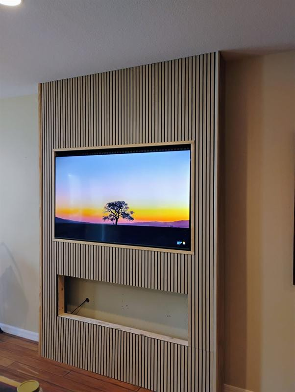
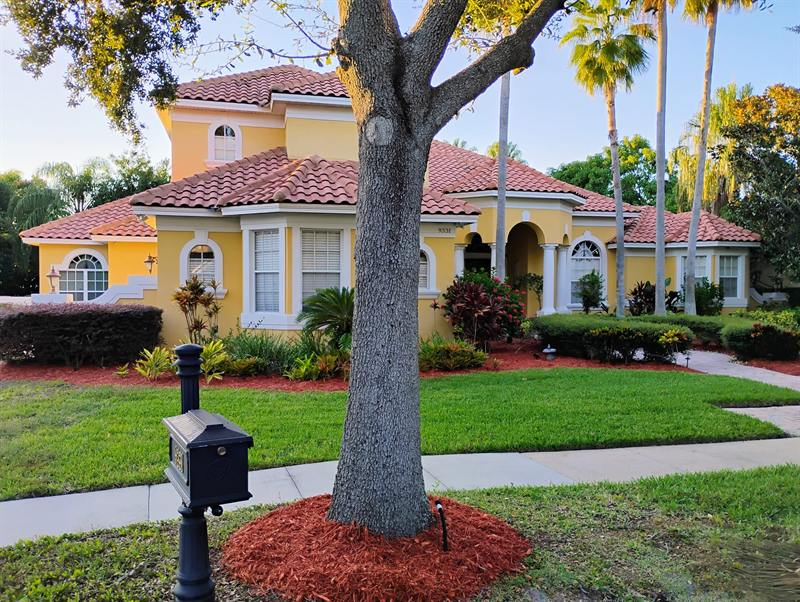
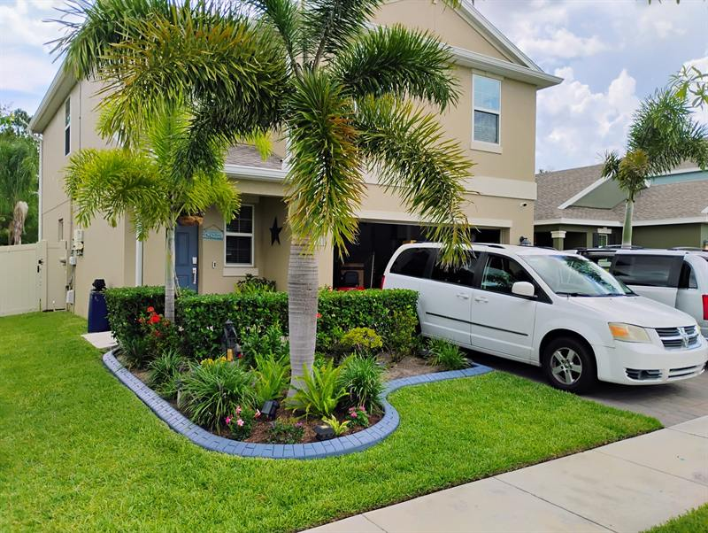
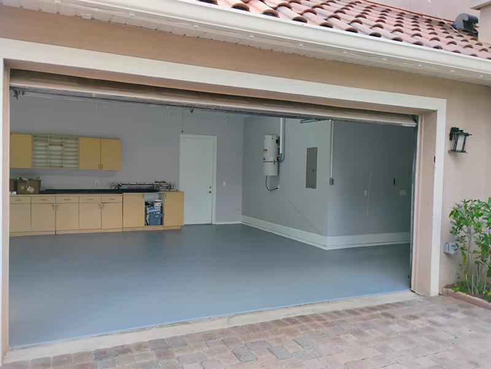
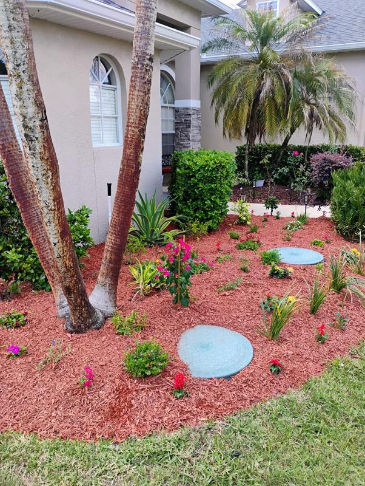
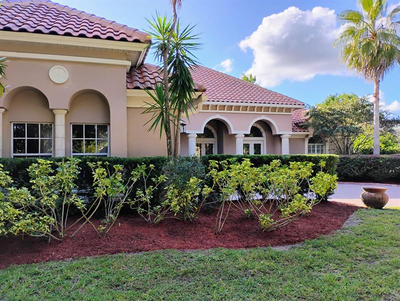
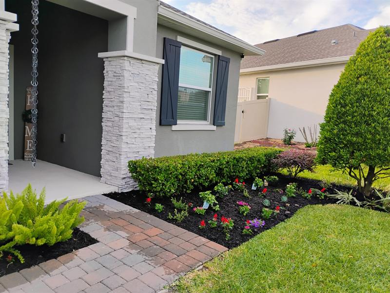
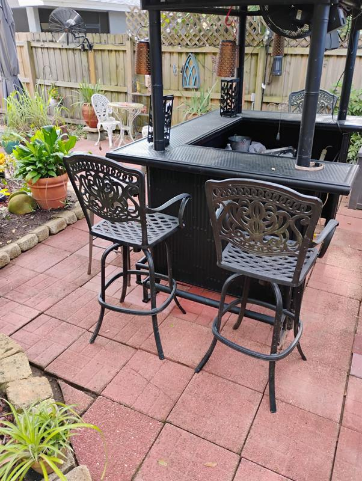
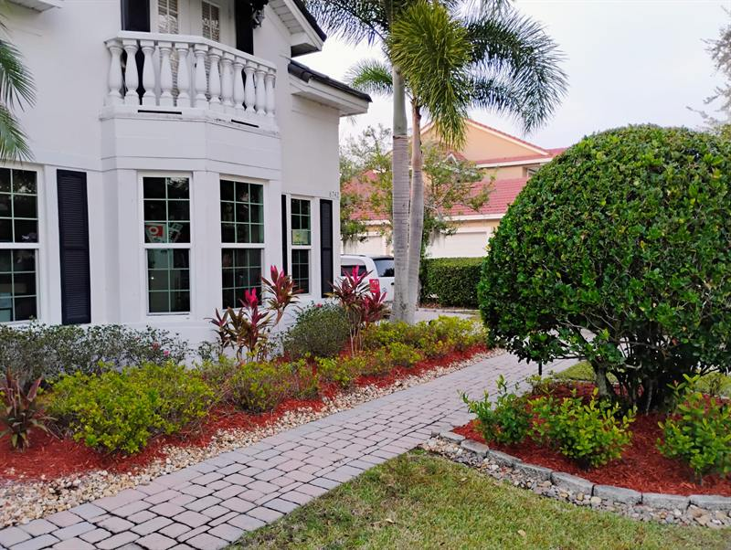
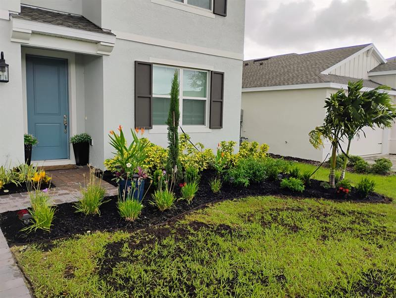
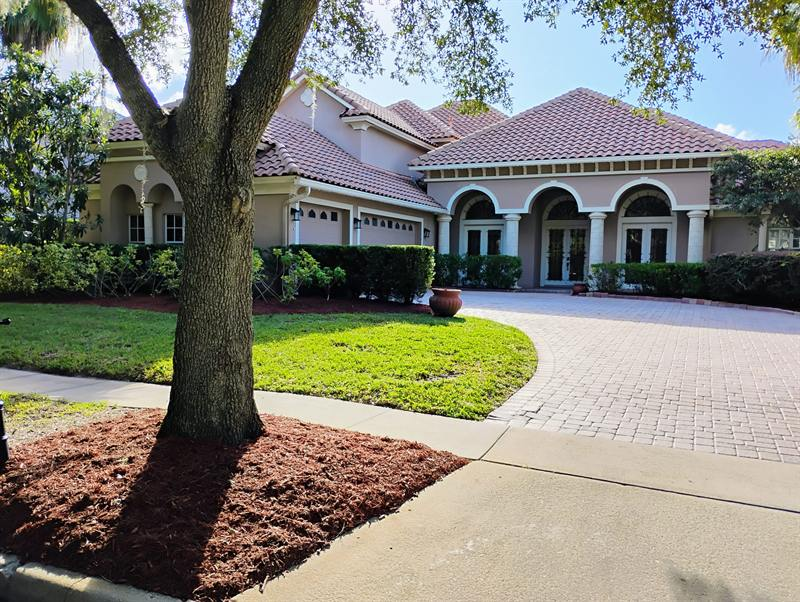
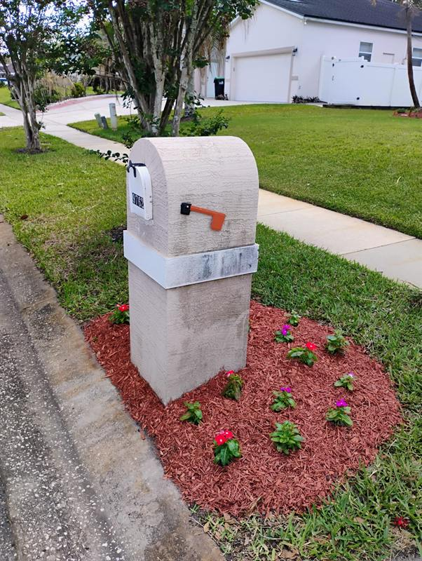
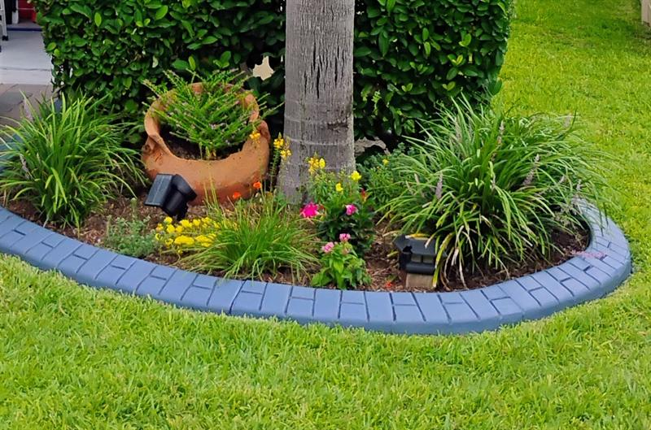
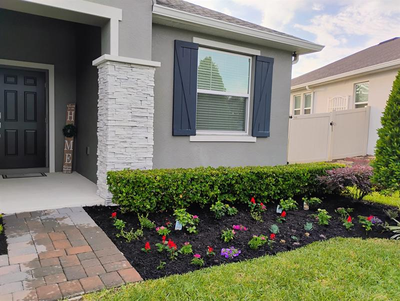
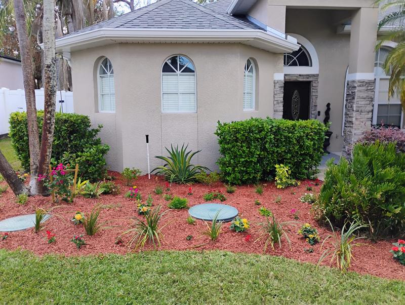
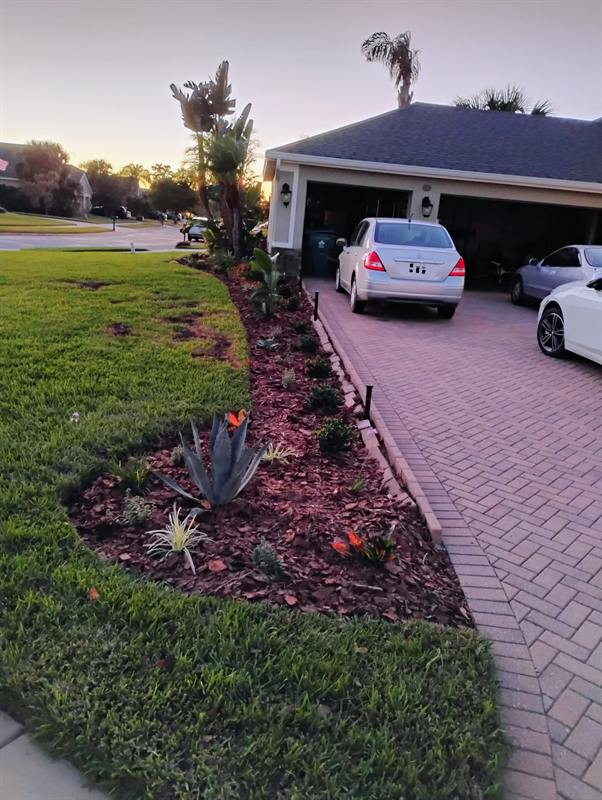